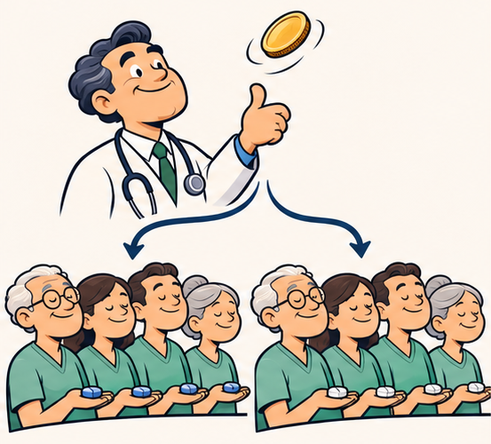
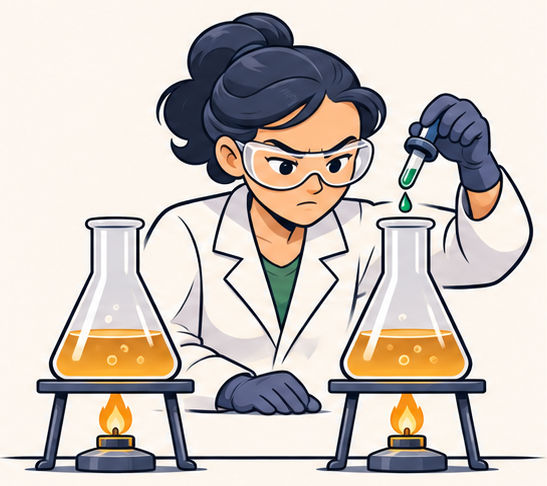
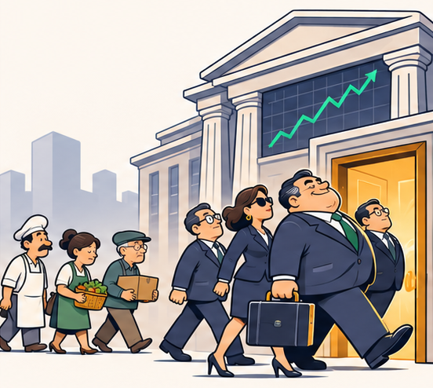

A research method answers a question so that others can check
Each field has a main method. Ours is the hardest to run.
1 · Methods

Medicine
Clinical trial
Same starting point
Chance splits the patients, so the groups are alike before treatment.

Engineering, chemistry
Laboratory experiment
Only one condition differs
The researcher changes one thing and keeps everything else the same.

Economics, finance, accounting
No laboratory
Different starting points
Firms choose for themselves, so the groups differ before the choice.
Every field asks the same question: compared with what?
Illustrations: generated with ChatGPT.
02 / 36